 Mes Services
Parametre
Deconnexion
GoorGoorLu
query($requete); // On affiche chaque entrée une à une while ($donnees = $reponse->fetch()) { ?>
closeCursor(); }catch(Exception $e) { die('Erreur : '.$e->getMessage()); } } catch (Exception $e) { die('Erreur : ' . $e->getMessage()); } ?>